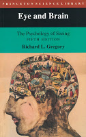

SENSORY PROCESSES & PERCEPTION
PS100 - Gleitman textbook
- ch5) Sensory Processes | Review ch5 Sensory Processes
- Origins of Knowledge
- Empiricist view | Nativist rejoiner
- Psychophysics
- measuring sensory intensity | detection and decision
- Sensory Coding
- Overview of Senses
- kinesthesis and the vestibular senses } skin senses | sense of taste | sense of smell | hearing | senses: common principles
- Vision
- the stimulus: light | gathering the stimulus: the eye | visual receptors | interaction in time: adaptation | interaction in space: contrast | color | physiological basis of color vision
- ch6) Perception | Review Ch6 Perception
- Problem of Perception
- Perception and Depth: Where Is It?
- binocular cues | monocular cues | perception of depth through motion | innate factors in depth perception
- Perception of Movement: What Is It Doing?
- illusions of movement | perceived stability
- Form Perception: What Is It?
- recognizing the elements of form | perceptual segregation | pattern recognition
- Perceptual Problem Solving
- creating new patterns | perceptual hypothesis | logic of perception | when logic fails: impossible figures
- Perceptual Selection: Attention
- selection by physical orientation | central selection
- Perception of Reality
- empiricism and nativism revisited | lightness constancy | size and shape constancy | inappropriate compensation and illusions
- Representation of Reality in Art
- seeing and knowing | Renaissance: scenes through a window frame | Impressionists: how a scene is perceived | Moderns: how a scene is conceived
PERCEPTION OF ART & DESIGN
|

|
- Eye and Brain: The Psychology of Seeing, 5th Ed.
Richard L. Gregory
1997 (orig 1966) | Princeton NJ
-
Eye & Brain TofC
|
| |
- The Language of Visual Art: Perception as a Basis for Design
Jack Frederick Myers
1989 | Harcourt Brace Jovanovich
|
[back to vault]